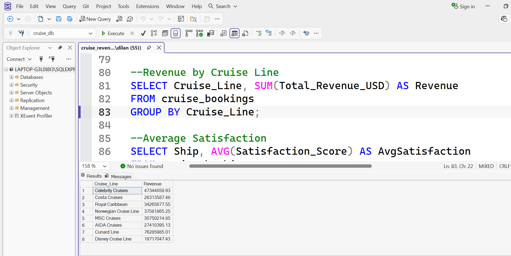
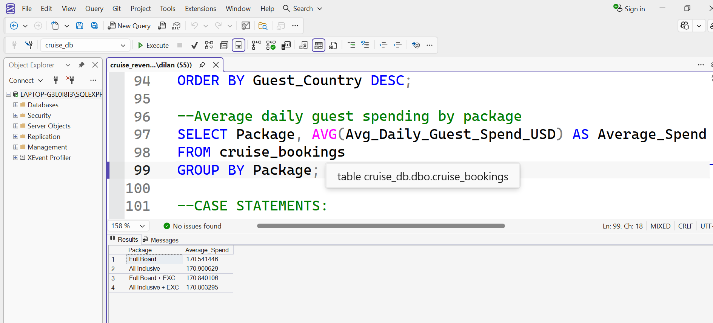
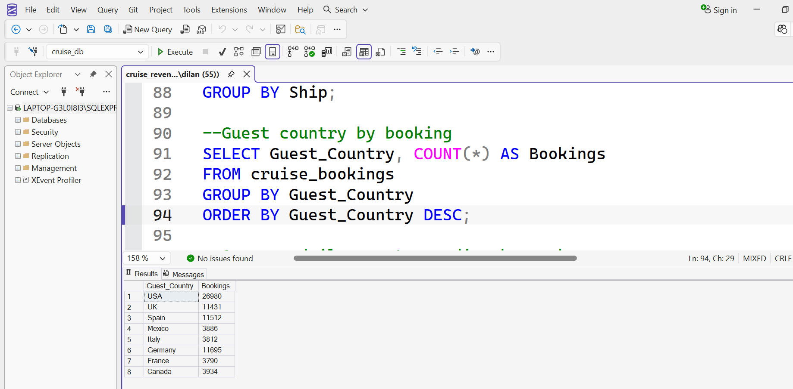
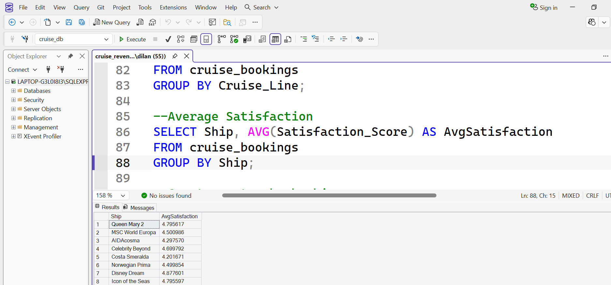
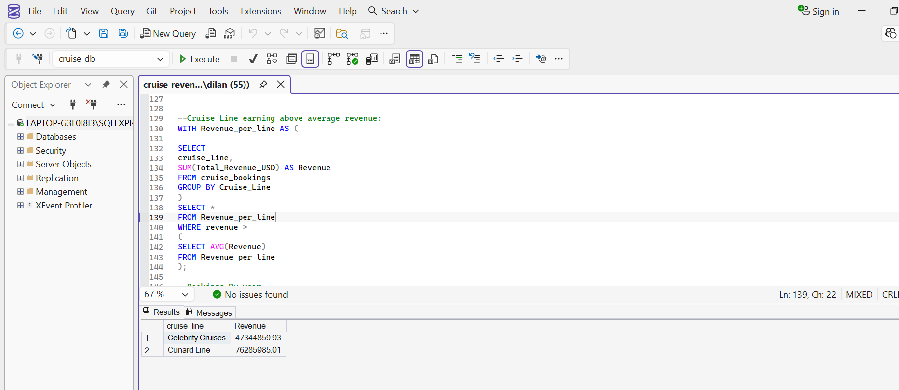

Case Study
Cruise Revenue Management
This SQL project analyses cruise booking data using Microsoft SQL Server to understand revenue performance, booking behaviour, occupancy rates, and customer satisfaction.
Tools Used
Dataset
- Cruise Reservations
- Cruise Lines
- Ships
- Booking Dates
- Travel Dates
- Revenue
- Occupancy Rates
- Guest Spending
- Customer Satisfaction
Business Questions
- Which cruise line generated the highest revenue?
- Which ships received the highest customer satisfaction?
- Which countries booked the most cruises?
- Which package generated the highest guest spending?
- How have bookings changed over time?
- Which cruise lines performed above average?
Database Creation
The project began by creating the Cruise Revenue Management database and importing the dataset into Microsoft SQL Server before performing data exploration and analysis.
CREATE DATABASE CruiseRevenueManagement;
USE CruiseRevenueManagement;
Data Cleaning
Before performing any analysis, the dataset was checked for missing values, duplicate reservations, and invalid revenue values to ensure data quality.
Checking for NULL Values
SELECT *
FROM cruise_bookings
WHERE Revenue IS NULL
OR Occupancy IS NULL
OR Satisfaction IS NULL;
This query verifies whether important analytical fields contain missing values that could affect business reporting.
Checking for Duplicate Reservations
SELECT Reservation_ID,
COUNT(*) AS TotalDuplicates
FROM cruise_bookings
GROUP BY Reservation_ID
HAVING COUNT(*) > 1;
Duplicate reservations were identified to ensure each booking was counted only once.
Checking Negative Revenue
SELECT *
FROM cruise_bookings
WHERE Revenue < 0;
Revenue values were validated to identify possible data entry errors.
Data Exploration
Total Bookings
SELECT COUNT(*)
FROM cruise_bookings;
Calculated the total number of reservations contained in the dataset.
Distinct Cruise Lines
SELECT DISTINCT Cruise_Line
FROM cruise_bookings;
Identified all cruise operators represented within the dataset.
Booking Sources
SELECT Booking_Source,
COUNT(*) AS TotalBookings
FROM cruise_bookings
GROUP BY Booking_Source
ORDER BY TotalBookings DESC;
Analysed where bookings originated to understand customer booking behaviour.
Revenue Analysis
Total Revenue
SELECT SUM(Revenue) AS TotalRevenue
FROM cruise_bookings;
Calculated the total revenue generated from all cruise bookings.
Revenue by Cruise Line
SELECT Cruise_Line,
SUM(Revenue) AS Revenue
FROM cruise_bookings
GROUP BY Cruise_Line
ORDER BY Revenue DESC;
Compared cruise lines to identify the highest revenue generators.
Advanced SQL Techniques
The final stage of the project applied more advanced SQL features to classify revenue, analyze booking trends over time, and identify cruise lines that performed above average.
Revenue Classification (CASE)
A CASE statement was used to classify bookings into different revenue categories, making it easier to identify high-value and low-value bookings.
SELECT
Reservation_ID,
Total_Revenue_USD,
CASE
WHEN Total_Revenue_USD >= 5000 THEN 'High Value'
WHEN Total_Revenue_USD >= 2500 THEN 'Medium Value'
ELSE 'Low Value'
END AS Booking_Type
FROM cruise_bookings;
Business Insight: Revenue classification helps identify premium bookings and supports targeted marketing strategies for high-value customers.
Monthly Booking Trends
Date functions were used to analyse booking activity by month and identify seasonal booking patterns.
SELECT
MONTH(Booking_Date) AS BookingMonth,
COUNT(*) AS TotalBookings
FROM cruise_bookings
GROUP BY MONTH(Booking_Date)
ORDER BY BookingMonth;
Business Insight: Monthly booking trends reveal peak travel seasons, allowing cruise companies to optimise staffing, pricing, and promotional campaigns.
Above Average Revenue (CTE)
A Common Table Expression (CTE) was used to compare each cruise line's revenue against the overall average revenue.
WITH RevenueCTE AS (
SELECT
Cruise_Line,
SUM(Revenue) AS TotalRevenue
FROM cruise_bookings
GROUP BY Cruise_Line
)
SELECT *
FROM RevenueCTE
WHERE TotalRevenue >
(
SELECT AVG(TotalRevenue)
FROM RevenueCTE
);
Business Insight: The CTE identifies cruise lines that outperform the overall average, making it easier for decision-makers to recognise top-performing operators.
SQL Query Gallery
The following screenshots showcase some of the SQL queries developed throughout the project. Each query answers a business question and demonstrates practical SQL techniques used during the analysis.

Revenue by Cruise Line
Used GROUP BY and SUM() to determine which cruise lines generated the highest revenue.

Bookings by Guest Country
Counted reservations by guest country to identify the markets contributing the largest number of bookings.

Customer Satisfaction
Calculated average satisfaction scores for each ship to compare customer experience across the fleet.

Guest Spending
Compared average guest spending across package types using aggregate functions.

Revenue Categories
Applied a CASE statement to classify bookings into High, Medium and Low revenue categories.

Above Average Cruise Lines
Used a Common Table Expression (CTE) to identify cruise lines generating above-average revenue.
Key Insights
- Royal Caribbean generated the highest overall revenue, indicating strong market performance.
- Certain cruise lines consistently achieved customer satisfaction scores above the overall average.
- Occupancy rates varied significantly across cruise routes, highlighting opportunities to improve capacity utilization.
- Guests booking premium packages recorded the highest average onboard spending.
- Booking activity showed clear seasonal trends, with peak demand occurring during holiday periods.
- The CTE analysis identified cruise operators consistently performing above the average revenue benchmark.
Business Recommendations
- Increase marketing efforts during low-demand months to improve occupancy rates.
- Expand premium package offerings to encourage higher guest spending.
- Analyze the strategies used by top-performing cruise lines and apply best practices across the fleet.
- Use customer satisfaction metrics alongside revenue when evaluating operational performance.
- Continue monitoring booking trends to support demand forecasting and pricing decisions.